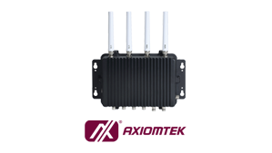
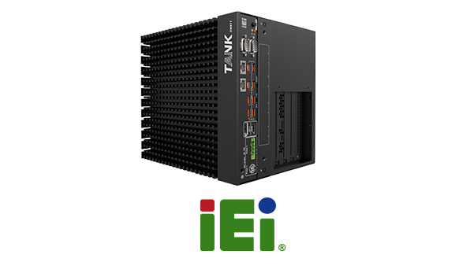
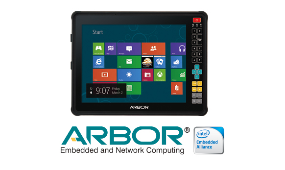

サポート
選定・設定・納期・品質保証まで、産業用部品の商社ならではの技術サポート体制でお客様の「困った」を解決します。よくあるご質問と各種認証情報をまとめました。
よくあるご質問
メーカー認定資格
当社は主要メーカーの正規販売代理店として、メーカー公認の技術認定を取得したエンジニアが選定・設定・保守までを一次対応します。正規流通品ならではの品質保証と、継続的な技術サポートをご提供します。
 正規代理店
MTSC 認定
正規代理店
MTSC 認定
Moxa 技術認定「MTSC」有資格者数 国内No.1
Moxa が毎年実施する高度な正規代理店エンジニア認定制度「MTSC（Moxa Technical Support Certification）」において、当社は国内販売代理店で最も多くの有資格者を擁しています。高度な技術とノウハウを持つエンジニアが、製品選定から導入・運用・トラブルシューティングまで一貫してサポートし、Moxa 製品の性能を最大限に引き出します。
（国内代理店）
プロフェッショナル集団が製品パフォーマンスの最大活用をご支援します。
産業用スイッチ・無線・シリアル機器の選定、冗長化リング（Turbo Ring）や MXConfig による一括設定までMTSC 認定エンジニアが対応します。

着脱10万回以上のスプリングワイヤーソケットが特長。カスタム設計・ケーブルハーネス（Assy）の相談から供給まで承ります。

エンコーダ・傾斜センサ・ウィーガンドセンサの型番選定、アプリケーションのご相談、後継品のご提案まで技術サポートします。

組込・産業用PCの選定、ドライバ/BIOS-ROM の入手、OS 供給期間・CPU 世代の対応確認までご支援します。

パネルPC・組込ボード・システムの長期供給に対応。用途に合わせた構成のご提案と保証・保守をサポートします。

車載・モバイル・産業用端末など堅牢設計の組込PCを取り扱い。ドライバ/マニュアル入手や仕様確認をサポートします。
メーカー正規流通品のみをお届け。トレーサビリティが明確で、メーカー標準保証・出荷検査結果の個別対応にも応じます。
選定・初期設定・不具合の切り分けからサイトサーベイ・現地調査まで、認定エンジニアが技術面を継続的にサポートします。
生産終了（EOL）製品も、在庫確認・保守入手ルート・後継品への移行を継続サポート。ODM/OEM や特注のご相談も承ります。
※ Moxa / MTSC に関する記載は実サイトの内容に基づきます。その他メーカーの区分・取扱表記の一部はデモ用の補足です。
国際規格・認証
販売終了製品
販売終了後も、既存のお客様サポートを継続します
生産終了（EOL）となった製品についても、在庫状況の確認・保守用の入手ルート・後継品への移行を継続してサポートいたします。設備の更新計画に合わせて、影響範囲の確認から後継品の選定までご相談ください。
仕様変更・生産終了の最新情報は「製品変更情報（PCN/EOL）」ページに随時掲載しています。ご購入履歴から該当製品の影響もご確認いただけます。
notifications.html を見る ›